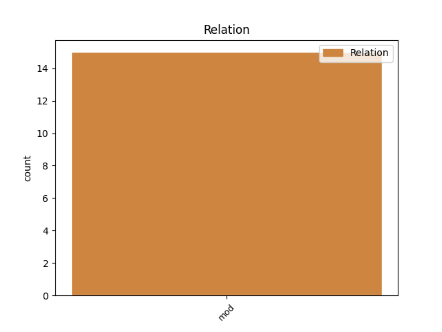
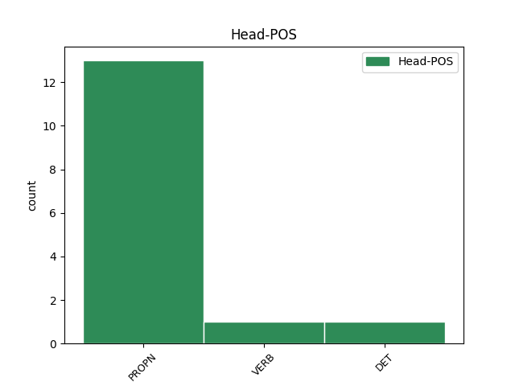
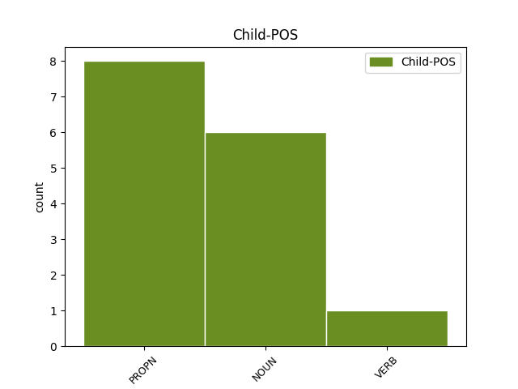

Distribution of features within this leaf



Agreement Rules sorted by frequency.
- When the dependent token is the modifer(mod) of the head token, and the head token is PROPN and the dependent token is PROPN.
1 У _ _ _ _ 0 _ _ _
2 аўторак _ _ _ _ 0 _ _ _
3 , _ _ _ _ 0 _ _ _
4 20 _ _ _ _ 0 _ _ _
5 сакавіка _ _ _ _ 0 _ _ _
6 , _ _ _ _ 0 _ _ _
7 брытанская _ _ _ _ 0 _ _ _
8 газета _ _ _ _ 0 _ _ _
9 Daily _ _ _ _ 0 _ _ _
10 Telegraph _ _ _ _ 0 _ _ _
11 са _ _ _ _ 0 _ _ _
12 спасылкай _ _ _ _ 0 _ _ _
13 на _ _ _ _ 0 _ _ _
14 дыпламатычныя _ _ _ _ 0 _ _ _
15 крыніцы _ _ _ _ 0 _ _ _
16 паведаміла _ _ _ _ 0 _ _ _
17 , _ _ _ _ 0 _ _ _
18 што _ _ _ _ 0 _ _ _
19 кіраўнікі _ _ _ _ 0 _ _ _
20 МЗС МЗС PROPN NNP Animacy=Inan|Case=Gen|Gender=Masc|Number=Plur 0 _ _ _
21 ЕС ЕС PROPN NNP Animacy=Inan|Case=Gen|Gender=Masc|Number=Sing 20 mod _ SpaceAfter=No
22 , _ _ _ _ 0 _ _ _
23 у _ _ _ _ 0 _ _ _
24 прыватнасці _ _ _ _ 0 _ _ _
25 , _ _ _ _ 0 _ _ _
26 уключаць _ _ _ _ 0 _ _ _
27 у _ _ _ _ 0 _ _ _
28 " _ _ _ _ 0 _ _ _
29 чорны _ _ _ _ 0 _ _ _
30 спіс _ _ _ _ 0 _ _ _
31 " _ _ _ _ 0 _ _ _
32 Асму _ _ _ _ 0 _ _ _
33 Асад _ _ _ _ 0 _ _ _
34 , _ _ _ _ 0 _ _ _
35 жонку _ _ _ _ 0 _ _ _
36 прэзідэнта _ _ _ _ 0 _ _ _
37 краіны _ _ _ _ 0 _ _ _
38 Башара _ _ _ _ 0 _ _ _
39 Асада _ _ _ _ 0 _ _ _
40 . _ _ _ _ 0 _ _ _
1 Усе _ _ _ _ 0 _ _ _
2 гэтыя _ _ _ _ 0 _ _ _
3 пытаннi _ _ _ _ 0 _ _ _
4 ў _ _ _ _ 0 _ _ _
5 чарговы _ _ _ _ 0 _ _ _
6 раз _ _ _ _ 0 _ _ _
7 узнiмалiся _ _ _ _ 0 _ _ _
8 ў _ _ _ _ 0 _ _ _
9 сценах _ _ _ _ 0 _ _ _
10 БелМАПА _ _ _ _ 0 _ _ _
11 на _ _ _ _ 0 _ _ _
12 вынiковай _ _ _ _ 0 _ _ _
13 калегii _ _ _ _ 0 _ _ _
14 Мiнiстэрства Мiнiстэрства PROPN NNP Animacy=Inan|Case=Gen|Gender=Neut|Number=Sing 0 _ _ _
15 аховы _ _ _ _ 0 _ _ _
16 здароўя _ _ _ _ 0 _ _ _
17 нашай _ _ _ _ 0 _ _ _
18 краiны краiна NOUN NN Animacy=Inan|Case=Gen|Gender=Fem|Number=Sing 14 mod _ SpaceAfter=No
19 . _ _ _ _ 0 _ _ _
1 Так _ _ _ _ 0 _ _ _
2 , _ _ _ _ 0 _ _ _
3 напрыклад _ _ _ _ 0 _ _ _
4 , _ _ _ _ 0 _ _ _
5 згаданая згаданы VERB _ Aspect=Perf|Case=Nom|Gender=Fem|Number=Sing|Tense=Past|VerbForm=Part|Voice=Pass 6 mod _ _
6 Вікторыя Вікторыя PROPN _ Animacy=Anim|Case=Nom|Gender=Fem|Number=Sing 0 _ _ _
7 Шаціла _ _ _ _ 0 _ _ _
8 спрагназавала _ _ _ _ 0 _ _ _
9 , _ _ _ _ 0 _ _ _
10 што _ _ _ _ 0 _ _ _
11 праблема _ _ _ _ 0 _ _ _
12 працаўладкавання _ _ _ _ 0 _ _ _
13 моладзі _ _ _ _ 0 _ _ _
14 праз _ _ _ _ 0 _ _ _
15 тысячу _ _ _ _ 0 _ _ _
16 гадоў _ _ _ _ 0 _ _ _
17 будзе _ _ _ _ 0 _ _ _
18 вырашана _ _ _ _ 0 _ _ _
19 пры _ _ _ _ 0 _ _ _
20 дапамозе _ _ _ _ 0 _ _ _
21 першай _ _ _ _ 0 _ _ _
22 беларускай _ _ _ _ 0 _ _ _
23 касмічнай _ _ _ _ 0 _ _ _
24 станцыі _ _ _ _ 0 _ _ _
25 , _ _ _ _ 0 _ _ _
26 абслугоўваць _ _ _ _ 0 _ _ _
27 якую _ _ _ _ 0 _ _ _
28 будуць _ _ _ _ 0 _ _ _
29 маладыя _ _ _ _ 0 _ _ _
30 спецыялісты _ _ _ _ 0 _ _ _
31 . _ _ _ _ 0 _ _ _
1 А _ _ _ _ 0 _ _ _
2 работа _ _ _ _ 0 _ _ _
3 непасрэдна _ _ _ _ 0 _ _ _
4 ўрача _ _ _ _ 0 _ _ _
5 , _ _ _ _ 0 _ _ _
6 якi _ _ _ _ 0 _ _ _
7 нясе _ _ _ _ 0 _ _ _
8 адказнасць _ _ _ _ 0 _ _ _
9 за _ _ _ _ 0 _ _ _
10 жыццё _ _ _ _ 0 _ _ _
11 хворага _ _ _ _ 0 _ _ _
12 чалавека _ _ _ _ 0 _ _ _
13 , _ _ _ _ 0 _ _ _
14 ацэньваецца _ _ _ _ 0 _ _ _
15 ў _ _ _ _ 0 _ _ _
16 7322 _ _ _ _ 0 _ _ _
17 рублi _ _ _ _ 0 _ _ _
18 за _ _ _ _ 0 _ _ _
19 гадзiну _ _ _ _ 0 _ _ _
20 , _ _ _ _ 0 _ _ _
21 што _ _ _ _ 0 _ _ _
22 нiжэй _ _ _ _ 0 _ _ _
23 за _ _ _ _ 0 _ _ _
24 заробкi _ _ _ _ 0 _ _ _
25 работнiкаў _ _ _ _ 0 _ _ _
26 прамысловасцi _ _ _ _ 0 _ _ _
27 , _ _ _ _ 0 _ _ _
28 будаўнiцтва _ _ _ _ 0 _ _ _
29 , _ _ _ _ 0 _ _ _
30 фiзiчнай _ _ _ _ 0 _ _ _
31 культуры _ _ _ _ 0 _ _ _
32 і _ _ _ _ 0 _ _ _
33 спорту _ _ _ _ 0 _ _ _
34 , _ _ _ _ 0 _ _ _
35 банкаўскай _ _ _ _ 0 _ _ _
36 сферы _ _ _ _ 0 _ _ _
37 , _ _ _ _ 0 _ _ _
38 работнiкаў _ _ _ _ 0 _ _ _
39 органаў _ _ _ _ 0 _ _ _
40 дзяржаўнага _ _ _ _ 0 _ _ _
41 кiравання _ _ _ _ 0 _ _ _
42 , _ _ _ _ 0 _ _ _
43 работнiкаў работнiкаць VERB _ Animacy=Anim|Case=Gen|Gender=Masc|Number=Plur 0 _ _ _
44 навуковай _ _ _ _ 0 _ _ _
45 сферы сфера NOUN _ Animacy=Inan|Case=Gen|Gender=Fem|Number=Sing 43 mod _ _
46 і _ _ _ _ 0 _ _ _
47 навуковага _ _ _ _ 0 _ _ _
48 абслугоўвання _ _ _ _ 0 _ _ _
49 . _ _ _ _ 0 _ _ _
Disagree Examples:
1 План _ _ _ _ 0 _ _ _
2 мерапрыемстваў _ _ _ _ 0 _ _ _
3 па _ _ _ _ 0 _ _ _
4 рэалізацыі _ _ _ _ 0 _ _ _
5 Канцэпцыі _ _ _ _ 0 _ _ _
6 кіравання _ _ _ _ 0 _ _ _
7 валавым _ _ _ _ 0 _ _ _
8 знешнім _ _ _ _ 0 _ _ _
9 доўгам _ _ _ _ 0 _ _ _
10 Беларусі _ _ _ _ 0 _ _ _
11 таксама _ _ _ _ 0 _ _ _
12 прадугледжвае _ _ _ _ 0 _ _ _
13 складанне _ _ _ _ 0 _ _ _
14 справаздачы _ _ _ _ 0 _ _ _
15 аб _ _ _ _ 0 _ _ _
16 ВВД _ _ _ _ 0 _ _ _
17 і _ _ _ _ 0 _ _ _
18 падрыхтоўку _ _ _ _ 0 _ _ _
19 прагнозу _ _ _ _ 0 _ _ _
20 аб _ _ _ _ 0 _ _ _
21 маючых _ _ _ _ 0 _ _ _
22 адбыцца _ _ _ _ 0 _ _ _
23 плацяжах _ _ _ _ 0 _ _ _
24 па _ _ _ _ 0 _ _ _
25 пагашэнні _ _ _ _ 0 _ _ _
26 і _ _ _ _ 0 _ _ _
27 абслугоўванні _ _ _ _ 0 _ _ _
28 знешняга _ _ _ _ 0 _ _ _
29 доўгу _ _ _ _ 0 _ _ _
30 ў _ _ _ _ 0 _ _ _
31 разрэзе _ _ _ _ 0 _ _ _
32 сектараў _ _ _ _ 0 _ _ _
33 эканомікі _ _ _ _ 0 _ _ _
34 ; _ _ _ _ 0 _ _ _
35 падрыхтоўку _ _ _ _ 0 _ _ _
36 і _ _ _ _ 0 _ _ _
37 накіраванне _ _ _ _ 0 _ _ _
38 ў _ _ _ _ 0 _ _ _
39 Саўмін _ _ _ _ 0 _ _ _
40 і _ _ _ _ 0 _ _ _
41 Нацбанк Нацбанк PROPN NNP Animacy=Inan|Case=Acc|Gender=Masc|Number=Sing 0 _ _ _
42 Беларусі Беларусь PROPN NNP Animacy=Inan|Case=Gen|Gender=Fem|Number=Sing 41 mod _ _
43 аналітычнай _ _ _ _ 0 _ _ _
44 запіскі _ _ _ _ 0 _ _ _
45 аб _ _ _ _ 0 _ _ _
46 стане _ _ _ _ 0 _ _ _
47 ВВД _ _ _ _ 0 _ _ _
48 з _ _ _ _ 0 _ _ _
49 ацэнкай _ _ _ _ 0 _ _ _
50 паказчыкаў _ _ _ _ 0 _ _ _
51 эканамічнай _ _ _ _ 0 _ _ _
52 бяспекі _ _ _ _ 0 _ _ _
53 па _ _ _ _ 0 _ _ _
54 пытаннях _ _ _ _ 0 _ _ _
55 ВВД _ _ _ _ 0 _ _ _
56 краіны _ _ _ _ 0 _ _ _
57 ; _ _ _ _ 0 _ _ _
58 інфармаванне _ _ _ _ 0 _ _ _
59 замежных _ _ _ _ 0 _ _ _
60 інвестараў _ _ _ _ 0 _ _ _
61 аб _ _ _ _ 0 _ _ _
62 макраэканамічнай _ _ _ _ 0 _ _ _
63 сітуацыі _ _ _ _ 0 _ _ _
64 ў _ _ _ _ 0 _ _ _
65 Беларусі _ _ _ _ 0 _ _ _
66 , _ _ _ _ 0 _ _ _
67 у _ _ _ _ 0 _ _ _
68 тым _ _ _ _ 0 _ _ _
69 ліку _ _ _ _ 0 _ _ _
70 інфармацыю _ _ _ _ 0 _ _ _
71 аб _ _ _ _ 0 _ _ _
72 стане _ _ _ _ 0 _ _ _
73 ВВД _ _ _ _ 0 _ _ _
74 ; _ _ _ _ 0 _ _ _
75 павышэнне _ _ _ _ 0 _ _ _
76 інфармаванасці _ _ _ _ 0 _ _ _
77 кіраўнікоў _ _ _ _ 0 _ _ _
78 прадпрыемстваў _ _ _ _ 0 _ _ _
79 рэальнага _ _ _ _ 0 _ _ _
80 сектара _ _ _ _ 0 _ _ _
81 аб _ _ _ _ 0 _ _ _
82 эфектыўных _ _ _ _ 0 _ _ _
83 стратэгіях _ _ _ _ 0 _ _ _
84 кіравання _ _ _ _ 0 _ _ _
85 знешнім _ _ _ _ 0 _ _ _
86 доўгам _ _ _ _ 0 _ _ _
87 , _ _ _ _ 0 _ _ _
88 магчымых _ _ _ _ 0 _ _ _
89 інструментах _ _ _ _ 0 _ _ _
90 мінімізацыі _ _ _ _ 0 _ _ _
91 рызык _ _ _ _ 0 _ _ _
92 знешніх _ _ _ _ 0 _ _ _
93 пазык _ _ _ _ 0 _ _ _
94 . _ _ _ _ 0 _ _ _
1 Менавіта _ _ _ _ 0 _ _ _
2 дакладнае _ _ _ _ 0 _ _ _
3 земляробства _ _ _ _ 0 _ _ _
4 можа _ _ _ _ 0 _ _ _
5 дазволіць _ _ _ _ 0 _ _ _
6 скараціць _ _ _ _ 0 _ _ _
7 спажыванне _ _ _ _ 0 _ _ _
8 паліва _ _ _ _ 0 _ _ _
9 на _ _ _ _ 0 _ _ _
10 40 _ _ _ _ 0 _ _ _
11 працэнтаў _ _ _ _ 0 _ _ _
12 , _ _ _ _ 0 _ _ _
13 гэтак _ _ _ _ 0 _ _ _
14 жа _ _ _ _ 0 _ _ _
15 зменшацца _ _ _ _ 0 _ _ _
16 расходы _ _ _ _ 0 _ _ _
17 ўгнаенняў _ _ _ _ 0 _ _ _
18 , _ _ _ _ 0 _ _ _
19 пестыцыдаў _ _ _ _ 0 _ _ _
20 і _ _ _ _ 0 _ _ _
21 іншых _ _ _ _ 0 _ _ _
22 сродкаў _ _ _ _ 0 _ _ _
23 , _ _ _ _ 0 _ _ _
24 паведаміў _ _ _ _ 0 _ _ _
25 намеснік _ _ _ _ 0 _ _ _
26 генеральнага _ _ _ _ 0 _ _ _
27 дырэктара _ _ _ _ 0 _ _ _
28 па _ _ _ _ 0 _ _ _
29 навуковай _ _ _ _ 0 _ _ _
30 рабоце _ _ _ _ 0 _ _ _
31 і _ _ _ _ 0 _ _ _
32 вытворчасці _ _ _ _ 0 _ _ _
33 Навукова-вытворчага _ _ _ _ 0 _ _ _
34 цэнтра _ _ _ _ 0 _ _ _
35 НАН НАН PROPN _ Animacy=Inan|Case=Nom|Gender=Masc|Number=Sing 0 _ _ _
36 Беларусі Беларусь PROPN _ Animacy=Inan|Case=Gen|Gender=Fem|Number=Sing 35 mod _ _
37 па _ _ _ _ 0 _ _ _
38 земляробстве _ _ _ _ 0 _ _ _
39 Дзмітрый _ _ _ _ 0 _ _ _
40 ЛУЖЫНСКІ _ _ _ _ 0 _ _ _
41 . _ _ _ _ 0 _ _ _
1 Па _ _ _ _ 0 _ _ _
2 інфармацыі _ _ _ _ 0 _ _ _
3 намесніка _ _ _ _ 0 _ _ _
4 генеральнага _ _ _ _ 0 _ _ _
5 дырэктара _ _ _ _ 0 _ _ _
6 па _ _ _ _ 0 _ _ _
7 навуковай _ _ _ _ 0 _ _ _
8 рабоце _ _ _ _ 0 _ _ _
9 Навукова-вытворчага _ _ _ _ 0 _ _ _
10 цэнтра _ _ _ _ 0 _ _ _
11 НАН НАН PROPN _ Animacy=Inan|Case=Nom|Gender=Masc|Number=Sing 0 _ _ _
12 Беларусі Беларусь PROPN _ Animacy=Inan|Case=Gen|Gender=Fem|Number=Sing 11 mod _ _
13 па _ _ _ _ 0 _ _ _
14 бульбаводстве _ _ _ _ 0 _ _ _
15 і _ _ _ _ 0 _ _ _
16 плодаагародніцтве _ _ _ _ 0 _ _ _
17 Вадзіма _ _ _ _ 0 _ _ _
18 МАХАНЬКО _ _ _ _ 0 _ _ _
19 , _ _ _ _ 0 _ _ _
20 нягледзячы _ _ _ _ 0 _ _ _
21 на _ _ _ _ 0 _ _ _
22 зніжэнне _ _ _ _ 0 _ _ _
23 пасяўных _ _ _ _ 0 _ _ _
24 плошчаў _ _ _ _ 0 _ _ _
25 « _ _ _ _ 0 _ _ _
26 другога _ _ _ _ 0 _ _ _
27 хлеба _ _ _ _ 0 _ _ _
28 » _ _ _ _ 0 _ _ _
29 , _ _ _ _ 0 _ _ _
30 бульбы _ _ _ _ 0 _ _ _
31 сёлета _ _ _ _ 0 _ _ _
32 ў _ _ _ _ 0 _ _ _
33 краіне _ _ _ _ 0 _ _ _
34 « _ _ _ _ 0 _ _ _
35 не _ _ _ _ 0 _ _ _
36 шмат _ _ _ _ 0 _ _ _
37 , _ _ _ _ 0 _ _ _
38 а _ _ _ _ 0 _ _ _
39 вельмі _ _ _ _ 0 _ _ _
40 шмат _ _ _ _ 0 _ _ _
41 » _ _ _ _ 0 _ _ _
42 . _ _ _ _ 0 _ _ _
1 З _ _ _ _ 0 _ _ _
2 улікам _ _ _ _ 0 _ _ _
3 таго _ _ _ _ 0 _ _ _
4 , _ _ _ _ 0 _ _ _
5 што _ _ _ _ 0 _ _ _
6 на _ _ _ _ 0 _ _ _
7 асноўным _ _ _ _ 0 _ _ _
8 рынку _ _ _ _ 0 _ _ _
9 збыту збыт NOUN _ Animacy=Inan|Case=Gen|Gender=Masc|Number=Sing 12 mod _ _
10 — _ _ _ _ 0 _ _ _
11 у _ _ _ _ 0 _ _ _
12 Расіі Расія PROPN _ Animacy=Inan|Case=Loc|Gender=Fem|Number=Sing 0 _ _ _
13 — _ _ _ _ 0 _ _ _
14 яе _ _ _ _ 0 _ _ _
15 высадзілі _ _ _ _ 0 _ _ _
16 больш _ _ _ _ 0 _ _ _
17 , _ _ _ _ 0 _ _ _
18 чым _ _ _ _ 0 _ _ _
19 звычайна _ _ _ _ 0 _ _ _
20 , _ _ _ _ 0 _ _ _
21 кошты _ _ _ _ 0 _ _ _
22 на _ _ _ _ 0 _ _ _
23 беларускі _ _ _ _ 0 _ _ _
24 прадукт _ _ _ _ 0 _ _ _
25 пачалі _ _ _ _ 0 _ _ _
26 падаць _ _ _ _ 0 _ _ _
27 . _ _ _ _ 0 _ _ _
1 Пэўны _ _ _ _ 0 _ _ _
2 час _ _ _ _ 0 _ _ _
3 таму _ _ _ _ 0 _ _ _
4 ў _ _ _ _ 0 _ _ _
5 галоўным _ _ _ _ 0 _ _ _
6 медыцынскiм _ _ _ _ 0 _ _ _
7 ведамстве _ _ _ _ 0 _ _ _
8 спрабавалi _ _ _ _ 0 _ _ _
9 скласцi _ _ _ _ 0 _ _ _
10 прыблiзны _ _ _ _ 0 _ _ _
11 " _ _ _ _ 0 _ _ _
12 сцэнарый _ _ _ _ 0 _ _ _
13 " _ _ _ _ 0 _ _ _
14 на _ _ _ _ 0 _ _ _
15 блiжэйшыя _ _ _ _ 0 _ _ _
16 5 _ _ _ _ 0 _ _ _
17 - _ _ _ _ 0 _ _ _
18 6 _ _ _ _ 0 _ _ _
19 гадоў _ _ _ _ 0 _ _ _
20 : _ _ _ _ 0 _ _ _
21 з _ _ _ _ 0 _ _ _
22 улiкам _ _ _ _ 0 _ _ _
23 аб'ёмаў _ _ _ _ 0 _ _ _
24 падрыхтоўкi _ _ _ _ 0 _ _ _
25 спецыялiстаў _ _ _ _ 0 _ _ _
26 у _ _ _ _ 0 _ _ _
27 медыцынскiх _ _ _ _ 0 _ _ _
28 ВНУ _ _ _ _ 0 _ _ _
29 , _ _ _ _ 0 _ _ _
30 дэмаграфiчных _ _ _ _ 0 _ _ _
31 тэндэнцый _ _ _ _ 0 _ _ _
32 і _ _ _ _ 0 _ _ _
33 многiх _ _ _ _ 0 _ _ _
34 iншых _ _ _ _ 0 _ _ _
35 акалiчнасцяў _ _ _ _ 0 _ _ _
36 атрымлiвалася _ _ _ _ 0 _ _ _
37 , _ _ _ _ 0 _ _ _
38 што _ _ _ _ 0 _ _ _
39 патрэбы патрэбы DET NN Animacy=Inan|Case=Acc|Gender=Masc|Number=Plur 0 _ _ _
40 айчыннай _ _ _ _ 0 _ _ _
41 сiстэмы сiстэма NOUN NN Animacy=Inan|Case=Gen|Gender=Fem|Number=Sing 39 mod _ _
42 аховы _ _ _ _ 0 _ _ _
43 здароўя _ _ _ _ 0 _ _ _
44 ва _ _ _ _ 0 _ _ _
45 ўрачэбных _ _ _ _ 0 _ _ _
46 кадрах _ _ _ _ 0 _ _ _
47 могуць _ _ _ _ 0 _ _ _
48 быць _ _ _ _ 0 _ _ _
49 задаволеныя _ _ _ _ 0 _ _ _
50 да _ _ _ _ 0 _ _ _
51 2014 _ _ _ _ 0 _ _ _
52 года _ _ _ _ 0 _ _ _
53 . _ _ _ _ 0 _ _ _